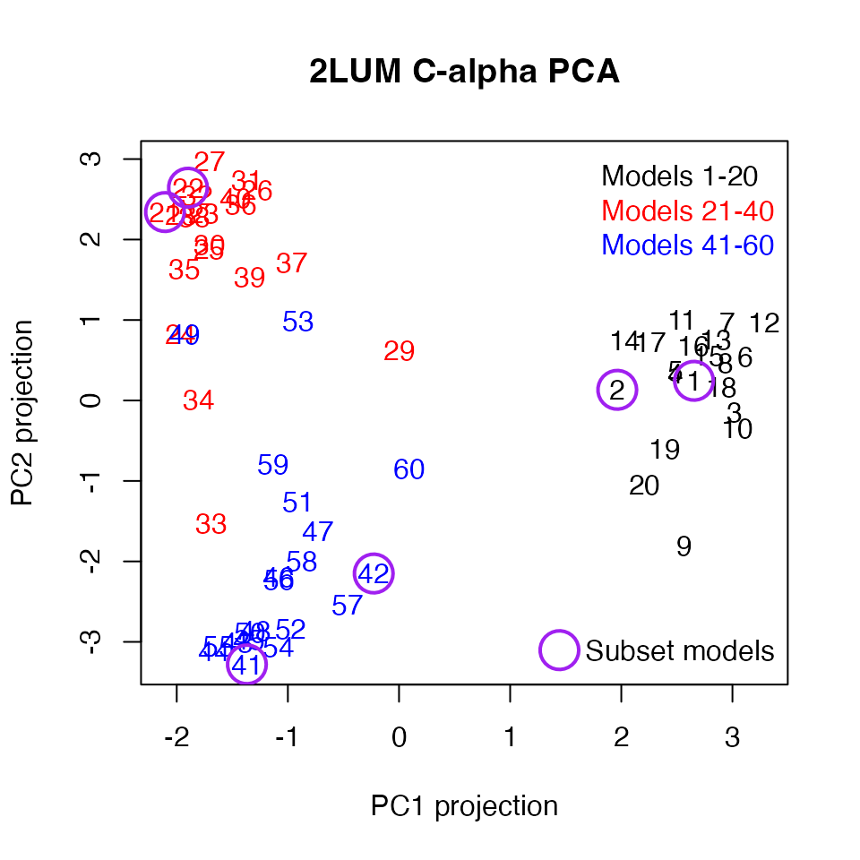
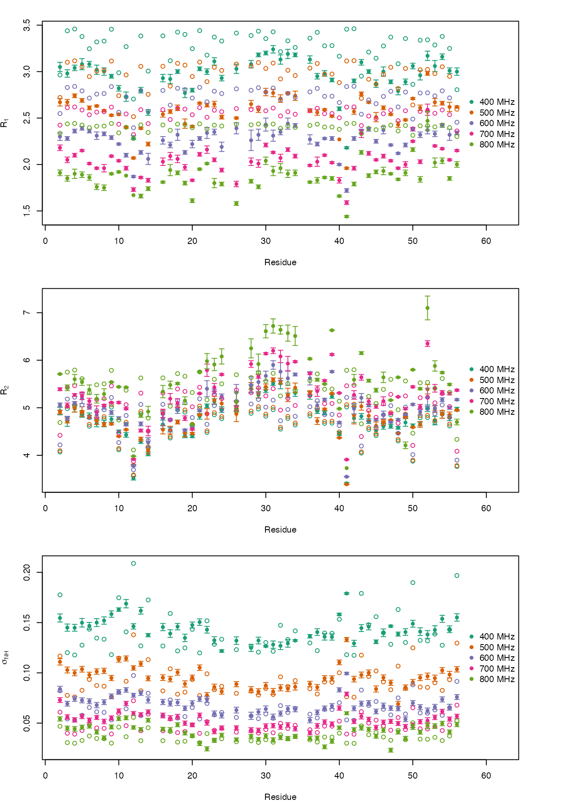
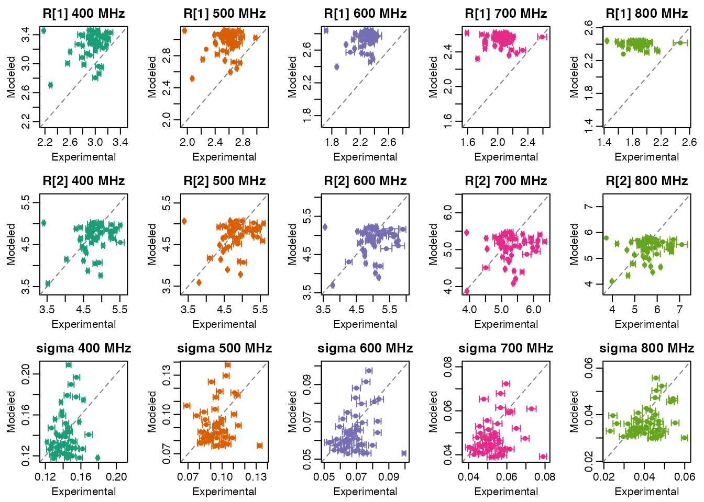

Datasets
2LUM Three-State Ensemble
The 2LUM 60-member
GB3 ensemble was generated by joint refinement of three-state ensembles
to eNOE, scalar coupling, and RDC data as described in Vögeli 2012. There are two
versions of the 2LUM ensemble included with the ke package.
One contains all C-alpha atoms of the 60-member ensemble. The other
contains all atoms of just models 1, 2, 21, 22, 41, and 42. They are
read into three-dimensional coordinate arrays, with the first dimension
representing x/y/z, the second representing atoms, and the third
representing the models:
library(ke)
ca_file <- system.file("extdata", "gb3", "2lum_ca.pdb.gz", package = "ke")
ca_coord <- read_ensemble(ca_file)
str(ca_coord)
#> num [1:3, 1:56, 1:60] 2.093 -0.001 -1.242 5.484 1.247 ...
#> - attr(*, "dimnames")=List of 3
#> ..$ : NULL
#> ..$ : chr [1:56] " CA MET A 1 " " CA GLN A 2 " " CA TYR A 3 " " CA LYS A 4 " ...
#> ..$ : chr [1:60] "M1" "M2" "M3" "M4" ...
subset_file <- system.file("extdata", "gb3", "2lum_subset.pdb.gz", package = "ke")
subset_coord <- read_ensemble(subset_file)
str(subset_coord)
#> num [1:3, 1:859, 1:6] 1.329 0 0 2.093 -0.001 ...
#> - attr(*, "dimnames")=List of 3
#> ..$ : NULL
#> ..$ : chr [1:859] " N MET A 1 " " CA MET A 1 " " C MET A 1 " " O MET A 1 " ...
#> ..$ : chr [1:6] "M1" "M2" "M3" "M4" ...
subset_models <- c(1, 2, 21, 22, 41, 42)The following carries out a principal components analysis on the C-alpha atoms and projects them onto the first two principal components.
ca_matrix <- t(apply(ca_coord, 3, c))
ca_matrix <- scale(ca_matrix, center = TRUE, scale = FALSE)
ca_pca <- eigen(cov(ca_matrix))
ca_proj <- ca_matrix %*% ca_pca$vectors[, 1:2]The first two principal component projections can be plotted, revealing reasonably distinct states.
model_col <- c(rep("black", 20), rep("red", 20), rep("blue", 20))
plot(ca_proj[, 1], ca_proj[, 2], xlab = "PC1 projection", ylab = "PC2 projection",
main = "2LUM C-alpha PCA", type = "n")
text(ca_proj[, 1], ca_proj[, 2], labels = 1:60, col = model_col)
points(ca_proj[subset_models, 1], ca_proj[subset_models, 2],
pch = 1, col = "purple", cex = 3, lwd = 2)
legend("topright", legend = c("Models 1-20", "Models 21-40", "Models 41-60"),
text.col = c("black", "red", "blue"), bty = "n")
legend("bottomright", legend = "Subset models", col = "purple",
pch = 1, pt.cex = 3, pt.lwd = 2, bty = "n")
The six models included in 2lum_subset.pdb.gz are
circled in purple above. Working under the assumption that models
refined together have numbers separated by 20, those should be the first
two three-state ensembles.
15N Backbone Relaxation Data
The hall2006 directory contains GB3 15N
backbone relaxation data reported by Hall 2006: longitudinal
relaxation rates (R1.csv), transverse relaxation rates
(R2.csv), and steady-state heteronuclear NOE values
(NOE.csv). Each file contains one row per residue, with
measured values and associated uncertainties at five proton spectrometer
frequencies ranging from approximately 400 to 800 MHz (9.4-18.8 T,
respectively).
hall2006_dir <- system.file("extdata", "gb3", "hall2006", package = "ke")
r1 <- read.csv(file.path(hall2006_dir, "R1.csv"))
r2 <- read.csv(file.path(hall2006_dir, "R2.csv"))
noe <- read.csv(file.path(hall2006_dir, "NOE.csv"))
str(r1)
#> 'data.frame': 51 obs. of 11 variables:
#> $ residue : int 2 3 4 5 6 7 8 9 10 11 ...
#> $ R1_9.4T : num 3.05 2.98 3.04 3.08 3.08 3.02 3 2.95 2.82 2.73 ...
#> $ R1_err_9.4T : num 0.05 0.04 0.03 0.06 0.03 0.05 0.04 0.02 0.03 0.05 ...
#> $ R1_11.7T : num 2.67 2.67 2.74 2.69 2.61 2.63 2.58 2.53 2.54 2.4 ...
#> $ R1_err_11.7T: num 0.04 0.03 0.02 0.02 0.02 0.01 0.01 0.01 0.01 0.01 ...
#> $ R1_14.1T : num 2.3 2.28 2.36 2.39 2.36 2.31 2.33 2.29 2.22 2.1 ...
#> $ R1_err_14.1T: num 0.04 0.02 0.02 0.02 0.02 0.04 0.02 0.02 0.01 0.02 ...
#> $ R1_16.4T : num 2.18 2.05 2.1 2.15 2.01 1.96 1.96 2.09 2.04 1.96 ...
#> $ R1_err_16.4T: num 0.03 0.03 0.02 0.01 0.01 0.01 0.04 0.01 0.01 0.02 ...
#> $ R1_18.8T : num 1.91 1.85 1.9 1.89 1.86 1.76 1.75 1.9 1.92 1.88 ...
#> $ R1_err_18.8T: num 0.03 0.03 0.05 0.03 0.03 0.03 0.03 0.01 0.01 0 ...
str(r2)
#> 'data.frame': 51 obs. of 11 variables:
#> $ residue : int 2 3 4 5 6 7 8 9 10 11 ...
#> $ R2_9.4T : num 4.93 4.71 4.98 4.87 4.83 4.67 4.67 4.76 4.5 4.43 ...
#> $ R2_err_9.4T : num 0.08 0.1 0.07 0.07 0.06 0.07 0.07 0.06 0.03 0.05 ...
#> $ R2_11.7T : num 4.91 4.73 4.99 4.92 4.81 4.72 4.65 4.66 4.4 4.54 ...
#> $ R2_err_11.7T: num 0.04 0.05 0.08 0.1 0.03 0.07 0.04 0.02 0.01 0.01 ...
#> $ R2_14.1T : num 5.06 4.78 5.1 5.2 5.02 4.85 5.02 4.9 4.78 4.65 ...
#> $ R2_err_14.1T: num 0.04 0.04 0.03 0.11 0.05 0.06 0.05 0.04 0.03 0.03 ...
#> $ R2_16.4T : num 5.39 5.05 5.27 5.25 5.14 4.91 5.05 5.11 5.11 4.98 ...
#> $ R2_err_16.4T: num 0.03 0.05 0.03 0.08 0.06 0.13 0.02 0.01 0.02 0.02 ...
#> $ R2_18.8T : num 5.71 5.42 5.6 5.54 5.38 5.19 5.29 5.54 5.44 5.43 ...
#> $ R2_err_18.8T: num 0.01 0.06 0.1 0.07 0.1 0.09 0.11 0.01 0.01 0.01 ...
str(noe)
#> 'data.frame': 51 obs. of 11 variables:
#> $ residue : int 2 3 4 5 6 7 8 9 10 11 ...
#> $ NOE_9.4T : num 0.5 0.52 0.53 0.52 0.53 0.51 0.5 0.47 0.43 0.39 ...
#> $ NOE_err_9.4T : num 0.01 0.01 0.01 0.01 0.01 0.01 0.01 0.01 0 0.01 ...
#> $ NOE_11.7T : num 0.59 0.62 0.64 0.62 0.63 0.62 0.61 0.63 0.56 0.53 ...
#> $ NOE_err_11.7T: num 0.01 0.01 0.01 0.01 0.01 0.01 0.01 0.01 0.01 0.01 ...
#> $ NOE_14.1T : num 0.64 0.7 0.69 0.7 0.7 0.71 0.7 0.67 0.64 0.61 ...
#> $ NOE_err_14.1T: num 0.01 0.01 0.01 0.01 0.01 0.01 0.01 0.01 0.01 0.01 ...
#> $ NOE_16.4T : num 0.67 0.73 0.75 0.74 0.74 0.72 0.74 0.74 0.7 0.65 ...
#> $ NOE_err_16.4T: num 0.01 0.01 0.01 0.01 0.01 0.01 0.01 0.01 0.01 0.01 ...
#> $ NOE_18.8T : num 0.72 0.76 0.77 0.76 0.75 0.77 0.8 0.76 0.72 0.71 ...
#> $ NOE_err_18.8T: num 0.01 0.01 0.01 0.01 0.01 0.01 0.01 0.01 0.01 0.01 ...The steady-state heteronuclear NOE values can be combined with the
corresponding R1 values to estimate sigma cross-relaxation
rates. For example, the following code constructs a sigma data frame in
the same wide format as the R1, R2, and
NOE tables.
field_labels <- c("9.4T", "11.7T", "14.1T", "16.4T", "18.8T")
sigma <- data.frame(residue = r1$residue)
for (field in field_labels) {
sigma_field <- noe_to_sigma(
noe = noe[[paste0("NOE_", field)]],
r1 = r1[[paste0("R1_", field)]],
dnoe = noe[[paste0("NOE_err_", field)]],
dr1 = r1[[paste0("R1_err_", field)]]
)
sigma[[paste0("sigma_", field)]] <- sigma_field[, "sigma"]
sigma[[paste0("sigma_err_", field)]] <- sigma_field[, "sigma_err"]
}
str(sigma)
#> 'data.frame': 51 obs. of 11 variables:
#> $ residue : int 2 3 4 5 6 7 8 9 10 11 ...
#> $ sigma_9.4T : num 0.155 0.145 0.145 0.15 0.147 ...
#> $ sigma_err_9.4T : num 0.004 0.00359 0.0034 0.00427 0.00343 ...
#> $ sigma_11.7T : num 0.111 0.1028 0.1 0.1036 0.0979 ...
#> $ sigma_err_11.7T: num 0.00318 0.00294 0.00287 0.00283 0.00275 ...
#> $ sigma_14.1T : num 0.0839 0.0693 0.0742 0.0727 0.0718 ...
#> $ sigma_err_14.1T: num 0.00275 0.00239 0.00247 0.0025 0.00247 ...
#> $ sigma_16.4T : num 0.0729 0.0561 0.0532 0.0567 0.053 ...
#> $ sigma_err_16.4T: num 0.00243 0.00223 0.00219 0.0022 0.00205 ...
#> $ sigma_18.8T : num 0.0542 0.045 0.0443 0.046 0.0471 ...
#> $ sigma_err_18.8T: num 0.00211 0.00201 0.00225 0.00205 0.00203 ...Input Data
15N Backbone Relaxation Data
To construct relaxation input for the subset ensemble, the Hall 2006
residue tables can be matched to backbone amide N-H pairs in
subset_coord. The first step is to identify which backbone
amide N-H pairs are present in the subset ensemble and keep only those
residue numbers that overlap the Hall 2006 relaxation tables.
atom_ids <- dimnames(subset_coord)[[2]]
atom_meta <- strcapture(
"^\\s*([A-Z0-9]+)\\s+([A-Z]{3})\\s+A\\s+([0-9]+)\\s*$",
atom_ids,
proto = list(atom_name = character(), res_name = character(), residue = integer())
)
atom_meta$atom_id <- atom_ids
n_atom <- atom_meta[atom_meta$atom_name == "N", c("residue", "atom_id")]
h_atom <- atom_meta[atom_meta$atom_name == "H", c("residue", "atom_id")]
names(n_atom)[2] <- "atom1"
names(h_atom)[2] <- "atom2"
atom_pairs <- merge(n_atom, h_atom, by = "residue")
atom_pairs <- atom_pairs[order(atom_pairs$residue), ]
relax_table <- Reduce(
function(x, y) merge(x, y, by = "residue"),
list(r1, r2, sigma)
)
relax_table <- merge(atom_pairs, relax_table, by = "residue")
atom_pairs <- relax_table[, c("atom1", "atom2")]
str(atom_pairs)
#> 'data.frame': 51 obs. of 2 variables:
#> $ atom1: chr " N GLN A 2 " " N TYR A 3 " " N LYS A 4 " " N LEU A 5 " ...
#> $ atom2: chr " H GLN A 2 " " H TYR A 3 " " H LYS A 4 " " H LEU A 5 " ...Next, the experimental R1, R2, and sigma
values are converted into the relax_data_list format used
by the package. Each entry in the list contains both a numeric vector of
observed values and a spectral-density term array describing how that
rate should be calculated for a given field strength. The following code
constructs a 15-element list representing three types of relaxation
rates (R1, R2, and \(\sigma_\mathrm{NH}\)) at each of five field
strengths.
field_mhz <- c("9.4T" = 400, "11.7T" = 500, "14.1T" = 600, "16.4T" = 700, "18.8T" = 800)
r_nh_angstrom <- 1.02
delta_sigma_ppm <- -172
k_from_err <- function(err) {
err_floor <- min(err[is.finite(err) & err > 0], na.rm = TRUE)
1 / pmax(err, err_floor)^2
}
relax_data_list <- list()
for (field in names(field_mhz)) {
proton_mhz <- field_mhz[[field]]
relax_data_list[[paste0("r1_", proton_mhz)]] <- list(
value = relax_table[[paste0("R1_", field)]],
k = k_from_err(relax_table[[paste0("R1_err_", field)]]),
spec_den_term_array = make_r1_spec_den_term_array(
n_pairs = nrow(atom_pairs),
proton_mhz = proton_mhz,
r_is_angstrom = r_nh_angstrom,
delta_sigma_ppm = delta_sigma_ppm
)
)
relax_data_list[[paste0("r2_", proton_mhz)]] <- list(
value = relax_table[[paste0("R2_", field)]],
k = k_from_err(relax_table[[paste0("R2_err_", field)]]),
spec_den_term_array = make_r2_spec_den_term_array(
n_pairs = nrow(atom_pairs),
proton_mhz = proton_mhz,
r_is_angstrom = r_nh_angstrom,
delta_sigma_ppm = delta_sigma_ppm
)
)
relax_data_list[[paste0("sigma_", proton_mhz)]] <- list(
value = relax_table[[paste0("sigma_", field)]],
k = k_from_err(relax_table[[paste0("sigma_err_", field)]]),
spec_den_term_array = make_sigma_spec_den_term_array(
n_pairs = nrow(atom_pairs),
proton_mhz = proton_mhz,
nucleus_i = "1H",
nucleus_s = "15N",
r_is_angstrom = r_nh_angstrom
)
)
}
str(relax_data_list, max.level = 1)
#> List of 15
#> $ r1_400 :List of 3
#> $ r2_400 :List of 3
#> $ sigma_400:List of 3
#> $ r1_500 :List of 3
#> $ r2_500 :List of 3
#> $ sigma_500:List of 3
#> $ r1_600 :List of 3
#> $ r2_600 :List of 3
#> $ sigma_600:List of 3
#> $ r1_700 :List of 3
#> $ r2_700 :List of 3
#> $ sigma_700:List of 3
#> $ r1_800 :List of 3
#> $ r2_800 :List of 3
#> $ sigma_800:List of 3It can be helpful to inspect one rate block in more detail. In the
example below, r1_400 contains the observed
R1 values at 400 MHz and the corresponding
spectral-density coefficients and frequencies used to calculate those
rates. The value vector gives the measured
R1 values.
str(relax_data_list[["r1_400"]])
#> List of 3
#> $ value : num [1:51] 3.05 2.98 3.04 3.08 3.08 3.02 3 2.95 2.82 2.73 ...
#> $ k : num [1:51] 400 625 1111 278 1111 ...
#> $ spec_den_term_array: num [1:51, 1:3, 1:2] 5.2e+08 5.2e+08 5.2e+08 5.2e+08 5.2e+08 ...
#> ..- attr(*, "dimnames")=List of 3
#> .. ..$ : NULL
#> .. ..$ : chr [1:3] "wHmwN" "wN" "wHpwN"
#> .. ..$ : chr [1:2] "coef" "freq"The first spec_den_term_array array dimension matches
the rows of atom_pairs. A small residue subset can be used
to see exactly how the values and term arrays line up.
example_idx <- 1:4
data.frame(
residue = relax_table$residue[example_idx],
atom_pairs[example_idx, ],
r1_400 = relax_data_list[["r1_400"]]$value[example_idx]
)
#> residue atom1 atom2 r1_400
#> 1 2 N GLN A 2 H GLN A 2 3.05
#> 2 3 N TYR A 3 H TYR A 3 2.98
#> 3 4 N LYS A 4 H LYS A 4 3.04
#> 4 5 N LEU A 5 H LEU A 5 3.08
relax_data_list[["r1_400"]]$spec_den_term_array[example_idx, , ]
#> , , coef
#>
#> wHmwN wN wHpwN
#> [1,] 519663430 1814970850 3117980578
#> [2,] 519663430 1814970850 3117980578
#> [3,] 519663430 1814970850 3117980578
#> [4,] 519663430 1814970850 3117980578
#>
#> , , freq
#>
#> wHmwN wN wHpwN
#> [1,] 2258529117 254745006 2768019128
#> [2,] 2258529117 254745006 2768019128
#> [3,] 2258529117 254745006 2768019128
#> [4,] 2258529117 254745006 2768019128For backbone 15N relaxation, the R1
expression below has been rewritten by spectral-density term to match
the structure of spec_den_term_array. Here, d and
c represent the dipolar and chemical shift anisotropy
constants, respectively.
\[ R_1 = \left(\frac{1}{10} d_{NH}^2\right) J(\omega_H - \omega_N) + \left(\frac{3}{10} d_{NH}^2 + c_N^2\right) J(\omega_N) + \left(\frac{3}{5} d_{NH}^2\right) J(\omega_H + \omega_N). \] The names used in the second dimension of the spectral-density term arrays follow a short frequency-label convention. In the case of R1,
-
wHmwNmeans \(\omega_H - \omega_N\) -
wNmeans \(\omega_N\) -
wHpwNmeans \(\omega_H + \omega_N\)
In other equations,
-
2wHmeans \(2 \, \omega_H\) - similarly,
wC,wF,wP, andwDdenote the corresponding nucleus frequencies
The third dimension stores the coef and
freq components for each term. In other words, the
value vector gives the measured R1
values, and spec_den_term_array gives the weighted \(J(\omega)\) terms used to calculate those
same relaxation rates.
Finally, the atom pairs, the unit flag, and the
relaxation blocks can be assembled into a single
atom_relax_data object. This is the input structure used to
build the kinetic-model matrices needed for relaxation calculations.
atom_relax_data <- list(
atom_pairs = atom_pairs,
unit = TRUE,
relax_data_list = relax_data_list
)
str(atom_relax_data, max.level = 2)
#> List of 3
#> $ atom_pairs :'data.frame': 51 obs. of 2 variables:
#> ..$ atom1: chr [1:51] " N GLN A 2 " " N TYR A 3 " " N LYS A 4 " " N LEU A 5 " ...
#> ..$ atom2: chr [1:51] " H GLN A 2 " " H TYR A 3 " " H LYS A 4 " " H LEU A 5 " ...
#> $ unit : logi TRUE
#> $ relax_data_list:List of 15
#> ..$ r1_400 :List of 3
#> ..$ r2_400 :List of 3
#> ..$ sigma_400:List of 3
#> ..$ r1_500 :List of 3
#> ..$ r2_500 :List of 3
#> ..$ sigma_500:List of 3
#> ..$ r1_600 :List of 3
#> ..$ r2_600 :List of 3
#> ..$ sigma_600:List of 3
#> ..$ r1_700 :List of 3
#> ..$ r2_700 :List of 3
#> ..$ sigma_700:List of 3
#> ..$ r1_800 :List of 3
#> ..$ r2_800 :List of 3
#> ..$ sigma_800:List of 3To evaluate these relaxation expressions for a kinetic ensemble, the
next step is to specify a kinetic model for exchange among the ensemble
members. As a simple example, the code below assumes that all six
members of subset_coord exchange through a single effective
rate constant, kens. This defines a transition-rate matrix
and then uses make_spec_den_relax_data() to combine the
kinetic model with the atom_relax_data structure prepared
above.
base_rates <- c(kens = 2e9)
subset_coord <- subset_coord[, , 1:6, drop = FALSE]
base_rate_mat <- rate_mat_simple(base_rates, dimnames(subset_coord)[[3]])
spec_den_relax_data <- make_spec_den_relax_data(
atom_relax_data = atom_relax_data,
base_rate_mat = base_rate_mat,
base_rates = base_rates
)
str(spec_den_relax_data, max.level = 2)
#> List of 7
#> $ atom_pairs :'data.frame': 51 obs. of 2 variables:
#> ..$ atom1: chr [1:51] " N GLN A 2 " " N TYR A 3 " " N LYS A 4 " " N LEU A 5 " ...
#> ..$ atom2: chr [1:51] " H GLN A 2 " " H TYR A 3 " " H LYS A 4 " " H LEU A 5 " ...
#> $ unit : logi TRUE
#> $ relax_data_list :List of 15
#> ..$ r1_400 :List of 3
#> ..$ r2_400 :List of 3
#> ..$ sigma_400:List of 3
#> ..$ r1_500 :List of 3
#> ..$ r2_500 :List of 3
#> ..$ sigma_500:List of 3
#> ..$ r1_600 :List of 3
#> ..$ r2_600 :List of 3
#> ..$ sigma_600:List of 3
#> ..$ r1_700 :List of 3
#> ..$ r2_700 :List of 3
#> ..$ sigma_700:List of 3
#> ..$ r1_800 :List of 3
#> ..$ r2_800 :List of 3
#> ..$ sigma_800:List of 3
#> $ groupings : int [1:2, 1:6] 1 1 1 2 1 3 1 4 1 5 ...
#> $ a_int_coef : num [1:2, 1:2] 1 0 -1 1
#> ..- attr(*, "dimnames")=List of 2
#> $ lambda_int_coef : int [1, 1:2] 0 1
#> ..- attr(*, "dimnames")=List of 2
#> $ inferred_multiplicity: Named int [1:2] 1 1
#> ..- attr(*, "names")= chr [1:2] "atom1" "atom2"Writing Spectral Density Relaxation Data
The spec_den_relax_data object can also be written to
disk as a set of CSV files. This is useful when preparing an analysis
outside the current R session, or when inspecting the exact inputs that
[read_spec_den_relax_data()] expects to reconstruct.
relax_prefix <- file.path(tempdir(), "gb3_15n")
write_spec_den_relax_data(spec_den_relax_data, relax_prefix)
relax_files <- list.files(
tempdir(),
pattern = "^gb3_15n_(atom_relax|groupings|a_coef|lambda_coef)\\.csv$",
full.names = TRUE
)
basename(relax_files)
#> [1] "gb3_15n_a_coef.csv" "gb3_15n_atom_relax.csv"
#> [3] "gb3_15n_groupings.csv" "gb3_15n_lambda_coef.csv"The *_atom_relax.csv file stores the atom-pair
identifiers together with the flattened relaxation-rate definitions.
Each rate contributes optional value and k
columns, followed by one coef and one freq
column for each spectral-density term. To keep the example compact, the
table below shows the first relaxation-rate block, r1_400,
for a small subset of residues.
atom_relax_csv <- read.csv(paste0(relax_prefix, "_atom_relax.csv"), check.names = FALSE)
first_rate <- names(spec_den_relax_data$relax_data_list)[[1]]
first_rate_cols <- grep(paste0("^", first_rate, "_"), names(atom_relax_csv), value = TRUE)
atom_relax_subset <- atom_relax_csv[
seq_len(6),
c(names(atom_relax_csv)[1:2], first_rate_cols),
drop = FALSE
]
knitr::kable(atom_relax_subset[, 1:6, drop = FALSE], digits = 3)| atom1_unit | atom2_unit | r1_400_value | r1_400_k | r1_400_wHmwN_coef | r1_400_wHmwN_freq |
|---|---|---|---|---|---|
| N GLN A 2 | H GLN A 2 | 3.05 | 400.000 | 519663430 | 2258529117 |
| N TYR A 3 | H TYR A 3 | 2.98 | 625.000 | 519663430 | 2258529117 |
| N LYS A 4 | H LYS A 4 | 3.04 | 1111.111 | 519663430 | 2258529117 |
| N LEU A 5 | H LEU A 5 | 3.08 | 277.778 | 519663430 | 2258529117 |
| N VAL A 6 | H VAL A 6 | 3.08 | 1111.111 | 519663430 | 2258529117 |
| N ILE A 7 | H ILE A 7 | 3.02 | 400.000 | 519663430 | 2258529117 |
knitr::kable(atom_relax_subset[, 7:10, drop = FALSE], digits = 3)| r1_400_wN_coef | r1_400_wN_freq | r1_400_wHpwN_coef | r1_400_wHpwN_freq |
|---|---|---|---|
| 1814970850 | 254745006 | 3117980578 | 2768019128 |
| 1814970850 | 254745006 | 3117980578 | 2768019128 |
| 1814970850 | 254745006 | 3117980578 | 2768019128 |
| 1814970850 | 254745006 | 3117980578 | 2768019128 |
| 1814970850 | 254745006 | 3117980578 | 2768019128 |
| 1814970850 | 254745006 | 3117980578 | 2768019128 |
The *_groupings.csv file encodes how internal kinetic
modes are grouped for dipole-dipole interaction tensor averaging. Each
row corresponds to one grouping pattern used later when constructing the
relaxation calculation.
groupings_csv <- as.matrix(
read.csv(paste0(relax_prefix, "_groupings.csv"), header = FALSE)
)
knitr::kable(groupings_csv, col.names = NULL)| 1 | 1 | 1 | 1 | 1 | 1 |
| 1 | 2 | 3 | 4 | 5 | 6 |
The *_a_coef.csv file stores the coefficients used to
build the internal-mode amplitudes from the supplied kinetic model. Its
columns correspond to the base rate constants, and its rows correspond
to grouped internal amplitudes.
a_coef_csv <- read.csv(paste0(relax_prefix, "_a_coef.csv"), check.names = FALSE)
knitr::kable(a_coef_csv, digits = 3)| 0 | kens |
|---|---|
| 1 | -1 |
| 0 | 1 |
Finally, the *_lambda_coef.csv file stores the
coefficients used to assemble the internal decay rates. These
coefficients are combined with the named base rates to produce the
internal eigenvalues used in the spectral-density sums.
lambda_coef_csv <- read.csv(
paste0(relax_prefix, "_lambda_coef.csv"),
check.names = FALSE,
row.names = 1
)
knitr::kable(lambda_coef_csv, digits = 3)| 0 | kens | |
|---|---|---|
| kens | 0 | 1 |
Fiting kens and Diso
Because atom_relax_data stores one force constant per
relaxation rate, the same setup can also be used in a simple numerical
fit. The example below uses [optim()] to refine the ensemble exchange
rate kens and an isotropic rotational diffusion constant
Diso by minimizing the weighted quadratic loss returned by
[coord_array_to_relax_energy()]. The optimization is carried out on the
log scale so that both fitted parameters remain positive.
coord_array_opt <- aperm(subset_coord, c(2, 1, 3))
quadratic_loss_local <- function(x, x0, k = 1, gradient = FALSE) {
expr1 <- x - x0
value <- k * expr1^2
if (gradient) {
attr(value, "gradient") <- k * (2 * expr1)
}
value
}
relax_energy_objective <- function(log_par) {
kens <- exp(log_par[[1]])
diso <- exp(log_par[[2]])
rates_fit <- c(kens = kens, Dx = diso, Dy = diso, Dz = diso)
coord_array_to_relax_energy(
coord_array = coord_array_opt,
rates = rates_fit,
spec_den_relax_data_list = list("15N" = spec_den_relax_data),
loss_func = quadratic_loss_local
)
}
optim_fit <- optim(
par = log(c(kens = 2e9, Diso = 5e7)),
fn = relax_energy_objective,
method = "Nelder-Mead"
)
fit_rates <- c(
kens = exp(optim_fit$par[[1]]),
Dx = exp(optim_fit$par[[2]]),
Dy = exp(optim_fit$par[[2]]),
Dz = exp(optim_fit$par[[2]])
)
fit_summary <- c(
kens = fit_rates[["kens"]],
tau_ens_ns = 1e9 / fit_rates[["kens"]],
Diso = fit_rates[["Dx"]],
tau_c_ns = 1e9 / (6 * fit_rates[["Dx"]])
)
fit_summary
#> kens tau_ens_ns Diso tau_c_ns
#> 6.464187e+08 1.546985e+00 6.142904e+07 2.713157e+00Plotting Relaxation Rates
The optimized values can then be inserted into the named rate vector and used with [coord_array_to_relax()] to calculate relaxation rates from the ensemble coordinates.
relax_calc <- coord_array_to_relax(
coord_array = coord_array_opt,
rates = fit_rates,
spec_den_relax_data_list = list("15N" = spec_den_relax_data)
)[["15N"]]
str(relax_calc)
#> num [1:51, 1:15] 2.96 3.44 3.46 3.38 3.25 ...
#> - attr(*, "dimnames")=List of 2
#> ..$ : chr [1:51] "2:N-2:H" "3:N-3:H" "4:N-4:H" "5:N-5:H" ...
#> ..$ : chr [1:15] "r1_400" "r2_400" "sigma_400" "r1_500" ...The plots below compare the experimental data to the rates calculated from the ensemble. Each color corresponds to one field strength, the closed circles show experimental values, the vertical bars show experimental uncertainties, and the open circles show corresponding rates calculated from the ensemble.
field_colors <- c(
"400" = "#1b9e77",
"500" = "#d95f02",
"600" = "#7570b3",
"700" = "#e7298a",
"800" = "#66a61e"
)
field_tesla_labels <- setNames(names(field_mhz), as.character(field_mhz))
plot_relax_comparison <- function(rate_prefix, value_prefix, err_prefix, ylab) {
residue <- relax_table$residue
calc_cols <- grep(paste0("^", rate_prefix, "_"), colnames(relax_calc), value = TRUE)
field_names <- sub(paste0("^", rate_prefix, "_"), "", calc_cols)
field_labels_t <- unname(field_tesla_labels[field_names])
xlim <- c(min(residue), max(residue) + 6)
y_exp <- unlist(lapply(field_labels_t, function(field) relax_table[[paste0(value_prefix, field)]]))
y_err <- unlist(lapply(field_labels_t, function(field) relax_table[[paste0(err_prefix, field)]]))
y_calc <- unlist(lapply(calc_cols, function(col) relax_calc[, col]))
plot(
xlim, range(c(y_exp - y_err, y_exp + y_err, y_calc), na.rm = TRUE),
type = "n", xlab = "Residue", ylab = ylab
)
for (i in seq_along(field_names)) {
field <- field_names[[i]]
field_t <- field_labels_t[[i]]
col <- field_colors[[field]]
exp_y <- relax_table[[paste0(value_prefix, field_t)]]
err_y <- relax_table[[paste0(err_prefix, field_t)]]
calc_y <- relax_calc[, paste0(rate_prefix, "_", field)]
has_err <- err_y > 0 & !is.na(err_y)
graphics::arrows(
x0 = residue[has_err], y0 = exp_y[has_err] - err_y[has_err],
x1 = residue[has_err], y1 = exp_y[has_err] + err_y[has_err],
angle = 90, code = 3, length = 0.03, col = col
)
points(residue, exp_y, pch = 16, col = col)
points(residue, calc_y, pch = 1, col = col)
}
legend(
"right",
legend = paste0(field_names, " MHz"),
col = unname(field_colors[field_names]),
pch = 16,
bty = "n"
)
}
old_par <- par(mfrow = c(3, 1), mar = c(4, 4, 2, 4))
plot_relax_comparison("r1", "R1_", "R1_err_", expression(R[1]))
plot_relax_comparison("r2", "R2_", "R2_err_", expression(R[2]))
plot_relax_comparison("sigma", "sigma_", "sigma_err_", expression(sigma[NH]))
par(old_par)The following grid shows the same comparison broken out by both relaxation-rate type and field strength. Each panel plots the modeled rates against the experimental values for one field, with vertical error bars showing the experimental uncertainties and the dashed diagonal marking perfect agreement.
plot_modeled_vs_experimental <- function(rate_prefix, value_prefix, err_prefix, main_prefix) {
field_names <- names(field_mhz)
for (field in field_names) {
proton_mhz <- field_mhz[[field]]
exp_y <- relax_table[[paste0(value_prefix, field)]]
err_y <- relax_table[[paste0(err_prefix, field)]]
calc_y <- relax_calc[, paste0(rate_prefix, "_", proton_mhz)]
keep <- is.finite(exp_y) & is.finite(calc_y)
lim <- range(c(exp_y[keep] - err_y[keep], exp_y[keep] + err_y[keep], calc_y[keep]), na.rm = TRUE)
plot(
exp_y, calc_y,
xlab = "Experimental",
ylab = "Modeled",
main = paste(main_prefix, proton_mhz, "MHz"),
pch = 16,
col = field_colors[[as.character(proton_mhz)]],
xlim = lim,
ylim = lim
)
abline(0, 1, lty = 2, col = "gray50")
has_err <- keep & err_y > 0 & !is.na(err_y)
graphics::arrows(
x0 = exp_y[has_err] - err_y[has_err], y0 = calc_y[has_err],
x1 = exp_y[has_err] + err_y[has_err], y1 = calc_y[has_err],
angle = 90, code = 3, length = 0.03,
col = field_colors[[as.character(proton_mhz)]]
)
}
}
old_par <- par(mfrow = c(3, 5), mar = c(3, 3, 2, 1), mgp = c(1.7, 0.6, 0))
plot_modeled_vs_experimental("r1", "R1_", "R1_err_", expression(R[1]))
plot_modeled_vs_experimental("r2", "R2_", "R2_err_", expression(R[2]))
plot_modeled_vs_experimental("sigma", "sigma_", "sigma_err_", expression(sigma))
par(old_par)